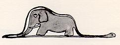

Once when I was six years old I saw a magnificent picture in a book, called True Stories from Nature,
about the primeval forest. It was a picture of a boa constrictor in the act of swallowing an animal. Here is
a copy of the drawing.
In the book it said: "Boa constrictors swallow their prey whole, without chewing it. After that they are
not able to move, and they sleep through the six months that they need for digestion."
I pondered deeply, then, over the adventures of the jungle. And after some work with a colored pencil I
succeeded in making my first drawing. My Drawing Number One. It looked something like this:
I showed my masterpiece to the grown-ups, and asked them whether the drawing frightened them.
But they answered: "Frighten? Why should any one be frightened by a hat?"
My drawing was not a picture of a hat. It was a picture of a boa constrictor digesting an elephant. But since
the grown-ups were not able to understand it, I made another drawing: I drew the inside of a boa
constrictor, so that the grown-ups could see it clearly. They always need to have things explained. My
Drawing Number Two looked like this:

The grown-ups' response, this time, was to advise me to lay aside my drawings of boa constrictors, whether
from the inside or the outside, and devote myself instead to geography, history, arithmetic, and grammar.
That is why, at the age of six, I gave up what might have been a magnificent career as a painter. I had been
disheartened by the failure of my Drawing Number One and my Drawing Number Two. Grown-ups never understand
anything by themselves, and it is tiresome for children to be always and forever explaining things to
them.
So then I chose another profession, and learned to pilot airplanes. I have flown a little over all parts of
the world; and it is true that geography has been very useful to me. At a glance I can distinguish China
from Arizona. If one gets lost in the night, such knowledge is valuable.
In the course of this life I have had a great many encounters with a great many people who have been
concerned with matters of consequence. I have lived a great deal among grown-ups. I have seen them
intimately, close at hand. And that hasn't much improved my opinion of them.
"That is a hat."
Then I would never talk to that person about boa constrictors, or primeval forests, or stars. I would bring
myself down to his level. I would talk to him about bridge, and golf, and politics, and neckties. And the
grown-up would be greatly pleased to have met such a sensible man.
So I lived my life alone, without anyone that I could really talk to, until I had an accident with my planein the Desert of Sahara, six years ago.
Something was broken in my engine. And as I had with me neither a
mechanic nor any passengers, I set myself to attempt the difficult repairs all alone. It was a question of
life or death for me: I had scarcely enough drinking water to last a week.
The first night, then, I went to sleep on the sand, a thousand miles from any human habitation. I was more
isolated than a shipwrecked sailor on a raft in the middle of the ocean. Thus you can imagine my amazement,
at sunrise, when I was awakened by an odd little voice. It said:
"If you please--draw me a sheep!"
"What!"
"Draw me a sheep!"
I jumped to my feet, completely thunderstruck. I blinked my eyes hard. I looked carefully all around me. And
I saw a most extraordinary small person, who stood there examining me with great seriousness. Here you may
see the best portrait that, later, I was able to make of him. But my drawing is certainly very much less
charming than its model.
Now I stared at this sudden apparition with my eyes fairly starting out of my head in astonishment. Remember,
I had crashed in the desert a thousand miles from any inhabited region. And yet my little man seemed neither
to be straying uncertainly among the sands, nor to be fainting from fatigue or hunger or thirst or fear.
Nothing about him gave any suggestion of a child lost in the middle of the desert, a thousand miles from any
human habitation. When at last I was able to speak, I said to him:
"But--what are you doing here?"
And in answer he repeated, very slowly, as if he were speaking of a matter of great consequence:
"If you please--draw me a sheep..."
When a mystery is too overpowering, one dare not disobey. Absurd as it might seem to me, a thousand miles
from any human habitation and in danger of death, I took out of my pocket a sheet of paper and my
fountain-pen. But then I remembered how my studies had been concentrated on geography, history, arithmetic
and grammar, and I told the little chap (a little crossly, too) that I did not know how to draw. He answered
me:
"That doesn't matter. Draw me a sheep..."
But I had never drawn a sheep. So I drew for him one of the two pictures I had drawn so often. It was that of
the boa constrictor from the outside. And I was astounded to hear the little fellow greet it with:
"No, no, no! I do not want an elephant inside a boa constrictor. A boa constrictor is a very dangerous
creature, and an elephant is very cumbersome. Where I live, everything is very small. What I need is a
sheep. Draw me a sheep."
So then I made a drawing.
He looked at it carefully, then he said:
"No. This sheep is already very sickly. Make me another."
So I made another drawing.
My friend smiled gently and indulgently.
"You see yourself," he said, "that this is not a sheep. This is a ram. It has horns."
So then I did my drawing over once more.
But it was rejected too, just like the others.
"This one is too old. I want a sheep that will live a long time."
By this time my patience was exhausted, because I was in a hurry to start taking my engine apart. So I tossed
off this drawing.
And I threw out an explanation with it.
"This is only his box. The sheep you asked for is inside."
I was very surprised to see a light break over the face of my young judge:
"That is exactly the way I wanted it! Do you think that this sheep will have to have a great deal of
grass?"
"Why?"
"Because where I live everything is very small..."
"There will surely be enough grass for him," I said. "It is a very small sheep that I have given you."
He bent his head over the drawing.
"Not so small that--Look! He has gone to sleep..."
And that is how I made the acquaintance of the little prince.